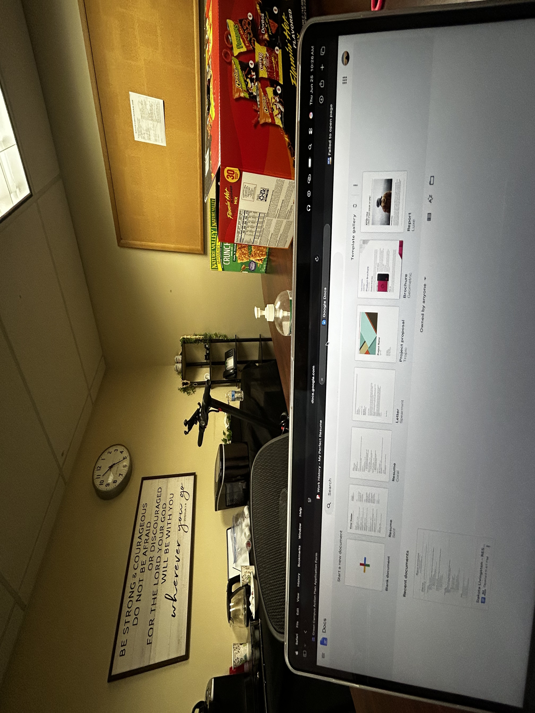
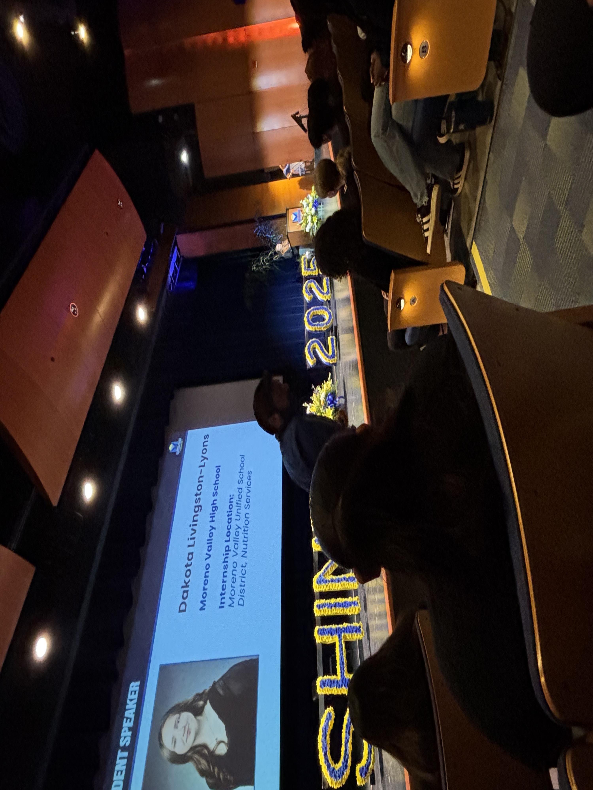
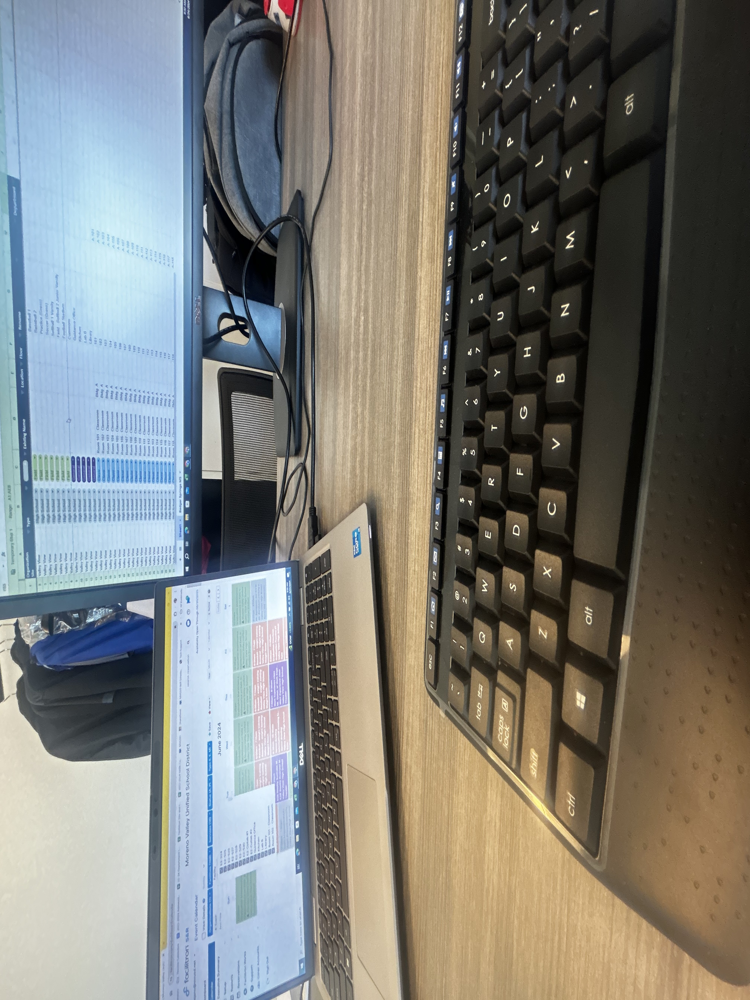
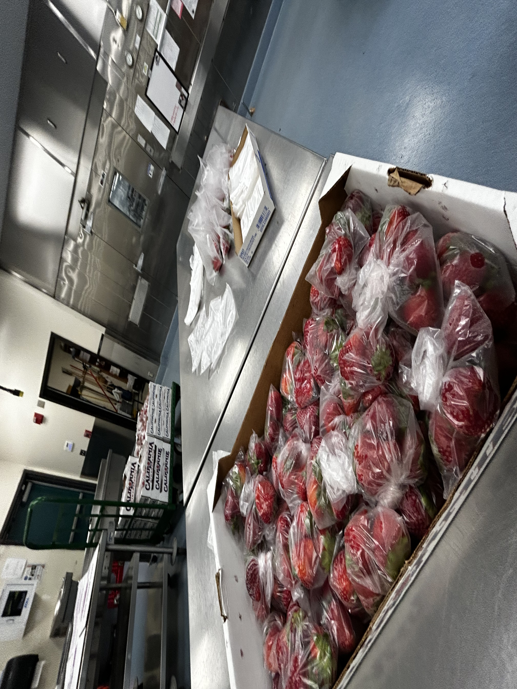

I am a motivated, dependable, and hardworking individual with a strong willingness to learn and develop new skills. Through my previous internship experience with the SHINE program, including my placement in Nutrition Services, I have gained valuable exposure to a professional work environment and the importance of responsibility, communication, and teamwork. I consider myself an adaptable and organized person who is comfortable working independently while also collaborating with others. I have strong communication and interpersonal skills, allowing me to interact respectfully with different individuals and contribute to a positive environment. I take pride in being creative, attentive, and approachable, and I am always willing to take initiative when given new responsibilities. My experiences in school, volunteering, and previous work opportunities have helped me develop patience, time management, problem-solving, and the ability to handle different tasks. As someone who is continuing my education, I am eager to gain additional professional experience, expand my abilities, and contribute positively to a workplace. I am committed to learning, improving, and putting my best effort into every opportunity.
• Assisting with student engagement activities to aid learning environments
• Communicate effectively with faculty and staff and accept suggestions for improvement
• Develop communication between students, parents, and faculty to promote academic success
• Optimized customer experience by delivering superior services and effectively troubleshooting lunch distribution issues
• Observed packing operations to verify conformance to specifications
• Conducted regular reviews of operations and viewed areas of culinary expertise in the main kitchen
• Collaborated with peers on projects that promoted teamwork and positive school environment
• Communicated efficiently with faculty and staff and searched for areas of improvement
• Developed time-management skills through balancing assignments
• Sorted and organized files, spreadsheets, and reports



